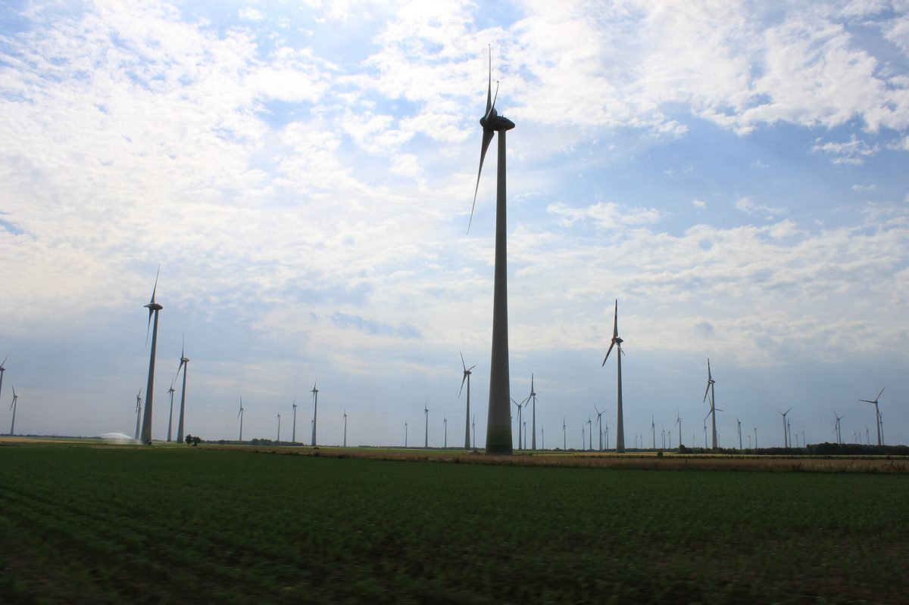

오스트리아 부르겐란트 주 에너지회사, 풍력·태양광 들어선 31개 마을 주민에게 500유로부터 출자 문 열어…연 3% 고정 5년

부르겐란트 에너지 주민 참여 2026, 500·2,500·5,000유로 세 묶음에 만기 때 원금 100% 상환…발전량과 무관한 고정 이자형, 야당은 나머지 140개 마을 배제 비판
오스트리아 동부 부르겐란트 주의 에너지회사 부르겐란트 에너지(Burgenland Energie)가 자사 풍력·태양광 발전소가 들어선 31개 기초지자체 주민을 대상으로 출자 상품 '주민 참여 2026'을 내놨다. 주민은 500유로, 2,500유로, 5,000유로 가운데 하나를 골라 참여할 수 있으며, 5년 동안 해마다 낸 돈의 3%를 고정으로 받고 계약이 끝나면 원금 100%를 돌려받는다. 이 3%는 발전소의 실제 발전량과 상관없이 지급되고 운영·정비·보험은 회사가 맡으며, 계약 상대는 회사가 100% 지분을 가진 자회사 BE Energy GmbH다. 슈테판 샤르마 회장은 500유로만 내도 태양광 패널 2장과 풍력단지 지분 일부에 참여하는 셈이라며, 앞서 꾸린 에너지공동체에 이은 다음 단계라고 설명했다. 회사는 주 안에서 직접 생산하는 에너지가 2021년 이후 전체 수요의 약 50%에서 약 75%로 늘었다고 밝혔고, 한스 페터 도스코칠 주지사는 2030년 에너지 자립 목표를 내세우며 주민이 그 길에 함께하면서 직접 이익도 얻는 것이 '부르겐란트 모델'의 중요한 부분이라고 말했다. 반면 야당인 국민당(ÖVP)의 크리스토프 차리츠 주 대표는 비용은 모든 주민이 내는데 이익을 나눌 때는 140개 지자체가 빠진다며 참여 대상을 주 전체 주민으로 넓히라고 요구했다.
시민에너지 관점
500유로부터 들어갈 수 있는 문을 연 것은 발전소 옆 주민을 이익의 한 몫으로 인정했다는 점에서 의미가 있지만, 발전량과 상관없는 연 3% 고정 이자에 5년 뒤 원금을 돌려받는 구조는 공동 소유라기보다 주민 대상 투자 상품에 가깝다. 고정 수익이 위험이 적어 주민에게 더 낫다는 반론도 있지만, 주민이 지분과 의결권을 갖지 못하면 발전소가 얼마를 벌든 어떻게 운영되든 주민은 정해진 이자만 받는 채권자에 머문다. 덴마크가 2009년부터 2020년까지 새 풍력단지 지분의 20%를 지역 주민에게 먼저 내놓게 한 것처럼, 수용성은 이자가 아니라 주인으로서의 몫에서 나온다. 국내에서도 주민 참여를 말할 때 이자율보다 지분·의결권·만기 뒤 소유 구조를 먼저 따져야 한다.
출처: ORF 부르겐란트 2026-10-24 기자 미표기 원문 보기
オーストリア・ブルゲンラント州のエネルギー会社、風力・太陽光が立つ31の自治体の住民に500ユーロから出資の門戸…年3％固定・5年
ブルゲンラント・エネルギーの「住民参加2026」、500・2,500・5,000ユーロの3口で満期に元本100％返還…発電量と無関係の固定利息型、野党は残る140自治体の排除を批判
オーストリア東部ブルゲンラント州のエネルギー会社ブルゲンラント・エネルギー（Burgenland Energie）が、自社の風力・太陽光発電所が立つ31の基礎自治体の住民を対象に、出資商品「住民参加2026」を打ち出した。住民は500ユーロ、2,500ユーロ、5,000ユーロのいずれかを選んで参加でき、5年間にわたり毎年出資額の3％を固定で受け取り、契約終了時に元本の100％が返還される。この3％は発電所の実際の発電量に関係なく支払われ、運営・保守・保険は会社が担い、契約の相手方は会社が100％出資する子会社BE Energy GmbHとなる。シュテファン・シャルマ会長は、500ユーロでも太陽光パネル2枚と風力発電所の持ち分の一部に参加することになると述べ、先に立ち上げたエネルギー共同体に続く次の段階だと説明した。会社は州内で自ら生産するエネルギーが2021年以降、総需要の約50％から約75％に増えたとしており、ハンス・ペーター・ドスコツィル州知事は2030年のエネルギー自立目標を掲げ、住民がその道を共に歩みながら直接利益も得られることが「ブルゲンラント・モデル」の重要な部分だと語った。一方、野党・国民党（ÖVP）のクリストフ・ツァリッツ州代表は、負担は全住民がするのに利益を分ける時には140の自治体が外されると批判し、対象を州の全住民に広げるよう求めた。
市民エネルギーの視点
500ユーロから入れる門戸を開いたことは、発電所のそばに住む住民を利益の担い手と認めた点で意味があるが、発電量に関係なく年3％の固定利息を受け取り5年後に元本が戻る仕組みは、共同所有というより住民向けの投資商品に近い。固定収益の方がリスクが小さく住民に有利だという反論もあるが、住民が持ち分と議決権を持たなければ、発電所がいくら稼ぎどう運営されても、住民は決まった利息を受け取るだけの債権者にとどまる。デンマークが2009年から2020年まで新しい風力発電所の持ち分の20％を地域住民に優先して提供させたように、受容性は利息ではなく所有者としての取り分から生まれる。韓国でも住民参加を語る時は、利率より持ち分・議決権・満期後の所有構造をまず問うべきだ。
出典: ORFブルゲンラント 2026-10-24 記者名なし 原文を読む
奥地利布尔根兰州能源公司向建有风电和光伏的31个市镇居民开放出资，500欧元起，年固定收益3%、期限5年
布尔根兰能源公司“居民参与2026”，分500、2,500、5,000欧元三档，到期返还100%本金…收益与发电量无关的固定利息型，反对党批评其余140个市镇被排除
奥地利东部布尔根兰州的能源公司布尔根兰能源（Burgenland Energie）推出出资产品“居民参与2026”，面向该公司已建成风电或光伏电站的31个基层市镇的居民。居民可在500欧元、2,500欧元和5,000欧元三档中任选一档参与，5年内每年固定获得出资额的3%，合同到期后返还全部本金。这3%与电站实际发电量无关，运营、维护和保险由公司负责，合同相对方是公司全资子公司BE Energy GmbH。公司董事长Stephan Sharma表示，只需500欧元就相当于参与了两块光伏板和风电场的一部分份额，这是继此前成立的能源共同体之后的下一步。公司称，自2021年以来，州内自产能源占总需求的比例已从约50%提高到约75%；州长Hans Peter Doskozil提出2030年实现能源自主的目标，并表示让居民一同走这条路并直接从中获益，是“布尔根兰模式”的重要组成部分。反对党人民党（ÖVP）州主席Christoph Zarits则批评说，付费时全州居民都有份，分享收益时却把140个市镇排除在外，要求向全州居民开放。
市民能源视角
开放500欧元起的出资渠道，意味着承认电站周边居民应分得一份收益，这有其意义；但收益与发电量无关、每年固定3%利息、5年后返还本金的结构，与其说是共同所有，不如说更接近面向居民的投资产品。有人会说固定收益风险小，对居民更有利，但居民若没有股份和表决权，无论电站赚多少、如何运营，居民都只是领取固定利息的债权人。正如丹麦在2009年至2020年间要求新建风电场把20%的股份优先提供给当地居民，接受度来自作为主人的份额，而不是利息。韩国谈居民参与时，也应先看股份、表决权和到期后的所有权结构，而不是利率。
来源: 奥地利广播公司布尔根兰台（ORF Burgenland） 2026-10-24 未署名 查看原文
Austrian state energy company Burgenland Energie opens investment from 500 euros to residents of 31 municipalities hosting its wind and solar plants, at a fixed 3% a year for five years
The Citizen Participation 2026 offer has packages of 500, 2,500 or 5,000 euros with full repayment at maturity; returns are fixed regardless of output, and the opposition criticises the exclusion of the other 140 municipalities
Burgenland Energie, the energy company of Austria's easternmost state, has launched an investment offer called "Bürger:innenbeteiligung 2026" (citizen participation 2026) for residents of the 31 municipalities where it has built wind or solar plants. Residents can choose a package of 500, 2,500 or 5,000 euros, receive a fixed 3% of the amount each year for five years, and get 100% of their money back when the contract ends. The 3% is paid regardless of how much the plants actually generate, the company handles operation, maintenance and insurance, and the contracting party is its wholly owned subsidiary BE Energy GmbH. Chief executive Stephan Sharma said that even 500 euros buys a stake in two solar panels and a share of a wind farm, calling the offer the next step after the energy community the company set up earlier. The company said the share of energy produced within the state has risen from about 50% to about 75% of total demand since 2021, and Governor Hans Peter Doskozil, pointing to the goal of energy independence by 2030, said that residents supporting this path and now profiting from it directly is an important part of the "Burgenland model". Christoph Zarits, state chairman of the opposition ÖVP, objected that while everyone in Burgenland pays, 140 municipalities are shut out when it comes to profiting, and called for the offer to be opened to all residents of the state.
Citizen Energy View
Opening the door from 500 euros matters because it recognises residents living next to the plants as entitled to a share of the benefits, but a fixed 3% a year unrelated to output, with principal returned after five years, is closer to an investment product for residents than to shared ownership. Some will argue that a fixed return is safer and therefore better for residents, but without equity and voting rights, residents remain creditors collecting set interest no matter how much the plants earn or how they are run. Just as Denmark required new wind projects from 2009 to 2020 to offer 20% of their shares to local residents first, acceptance comes from a stake as owners, not from interest payments. In Korea, too, discussions of resident participation should look first at equity, voting rights and who owns the plant after maturity, rather than at the interest rate.
Source: ORF Burgenland 2026-10-24 No byline Read the original